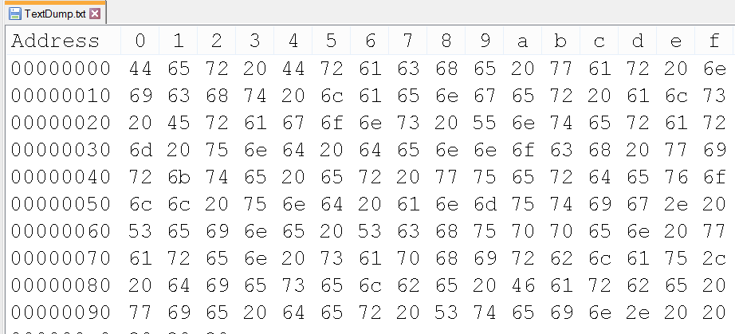
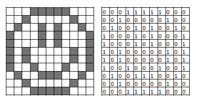
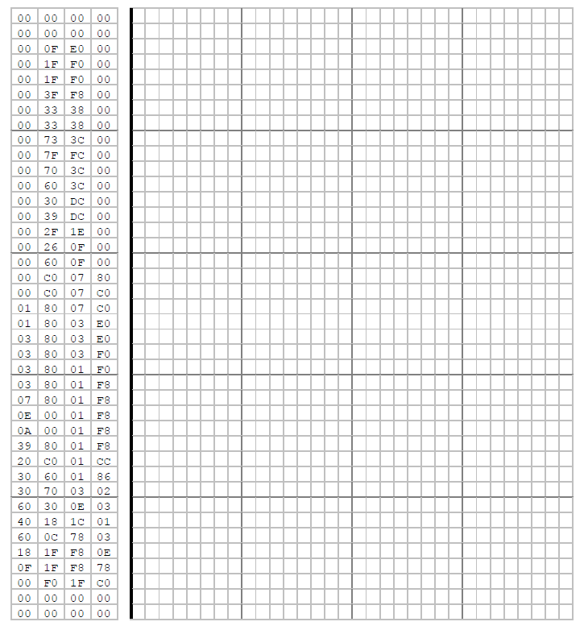

Binäre Interpretationen
Binäre Daten können auf verschiedenste Arten interpretiert werden. Einige dieser Interpretationen müssen Sie kennen.
Zweierkomplement
Bei der Codierung in der Zweierkomplementdarstellung sind negative Zahlen daran zu erkennen, dass das höchstwertige Bit den Wert 1 hat. Bei 0 liegt eine positive Zahl oder der Wert 0 vor.
Der Vorteil dieses Zahlenformates besteht darin, dass für die Verarbeitung in digitalen Schaltungen keine zusätzlichen Steuerlogiken notwendig sind.
Notieren Sie Ihre Rechnungen hier:
LSB versus MSB
Ausgangslage sei die Zahl 83 = 0101'0011bin
| Bit Nr | 7 | 6 | 5 | 4 | 3 | 2 | 1 | 0 |
|---|---|---|---|---|---|---|---|---|
| 2er Potenz | 27 | 26 | 25 | 24 | 23 | 22 | 21 | 20 |
| 83 | 0 | 1 | 0 | 1 | 0 | 0 | 1 | 1 |
Nicht jedes System ordnet die Bits gleich an! Bei serieller Datenübertragung ist es wichtig zu wissen, welches Bit mit welcher 2er Potenz zuerst übermittelt wird.
LSB Bitnummerierung (Least Significant Bit)
Bit 0 hat den niedrigsten Stellenwert, also 20
| Bit Nr | 7 | 6 | 5 | 4 | 3 | 2 | 1 | 0 |
|---|---|---|---|---|---|---|---|---|
| 2er Potenz | 27 | 26 | 25 | 24 | 23 | 22 | 21 | 20 |
| 83 | 0 | 1 | 0 | 1 | 0 | 0 | 1 | 1 |
MSB Bitnummerierung (Most Significant Bit)
Bit 0 hat den höchsten Stellenwert, also 2n-1
| Bit Nr | 7 | 6 | 5 | 4 | 3 | 2 | 1 | 0 |
|---|---|---|---|---|---|---|---|---|
| 2er Potenz | 20 | 21 | 22 | 23 | 24 | 25 | 26 | 27 |
| 202 | 0 | 1 | 0 | 1 | 0 | 0 | 1 | 1 |
Aufgabe
Sie haben diese Bitfolge über eine serielle Übertragung erhalten:
| Bit Nr | 0 | 1 | 2 | 3 | 4 | 5 | 6 | 7 |
|---|---|---|---|---|---|---|---|---|
| Bit Wert | 1 | 0 | 1 | 0 | 1 | 1 | 0 | 0 |
a) Berechnen Sie die dezimale Zahl einmal mit LSB und einmal mit MSB (ohne Zweierkomplement):
| Interpretation | Dezimalwert |
|---|---|
| LSB | |
| MSB |
b) Eigene Bitfolge mit dem Banknachbarn austauschen:
Big-Endian und Little-Endian
Ausgangslage sei die Zahl 27888 = 6CF0Hex
Die Zahl besteht aus zwei Bytes: 6CF0Hex = 6CHex × 28 + F0Hex
Das höherwertige Byte 6CHex steht links, das niederwertige Byte F0Hex rechts.
Wenn zwei Geräte Daten Byte um Byte übertragen, ist es nicht selbstverständlich, welches Byte zuerst übertragen wird:
- Variante A: 6CHex und dann F0Hex
- Variante B: F0Hex und dann 6CHex
Die Reihenfolge muss definiert werden. Dies nennt man Endianness.
| Bezeichnung | Beschreibung | Beispiel |
|---|---|---|
| Big-Endian | Höchstwertiges Byte zuerst | 6C F0 |
| Little-Endian | Kleinstwertiges Byte zuerst | F0 6C |
In der Computerwelt sprach man lange von den zwei Welten Motorola (Big-Endian) versus Intel (Little-Endian).
Aufgabe 1
In einem Speicher stehen diese Bytes hintereinander:
| Speicher | Wert |
|---|---|
| 0000 | A9Hex |
| 0001 | B3Hex |
Berechnen Sie die dezimale Zahl einmal mit Big-Endian und einmal mit Little-Endian:
| Interpretation | Hex-Wert | Dezimalwert |
|---|---|---|
| Big-Endian | ||
| Little-Endian |
Aufgabe 2: Memory-Dump
In einem Memory-Dump stehen viele Bytes hintereinander. Jeweils vier aufeinanderfolgende Bytes ergeben eine Zahl vom Typ Integer (32 Bit).
Berechnen Sie das Ergebnis mit Big-Endian und Little-Endian:

| Big-Endian | Little-Endian | |
|---|---|---|
| Erste 4 Bytes | ||
| Nächste 4 Bytes |
IEEE 754
Der Standard IEEE 754 definiert, wie Gleitkommazahlen (Kommazahlen) binär dargestellt werden. Lesen Sie das Dokument 40_IEEE 754.pdf und halten Sie fest, wie eine Zahl definiert wird:
Bilder
Bei Schwarz-Weiss-Zeichnungen ist jeder Bildpunkt entweder schwarz oder weiss und kann unmittelbar durch die Symbole 0 oder 1 codiert werden.
Der folgende Hexdump stammt von einer Schwarz/Weiss-Bitmap mit einer Auflösung von 32 × 40 Pixel. Wandeln Sie die Hex-Zahlen in Binär um und malen Sie die Kästchen aus, wenn die Bits gesetzt sind:


Was zeigt das Bild?
ASCII
Folgend sehen Sie einen «Hex-Dump» einer Textdatei. Übersetzen Sie mit Hilfe der ASCII-Tabelle die Hexadezimalzahlen in lesbaren ASCII-Text:
Unicode UTF-8
Lesen Sie das Dokument 30_Unicode.pdf und halten Sie fest, worin sich ASCII von Unicode UTF-8 unterscheidet: